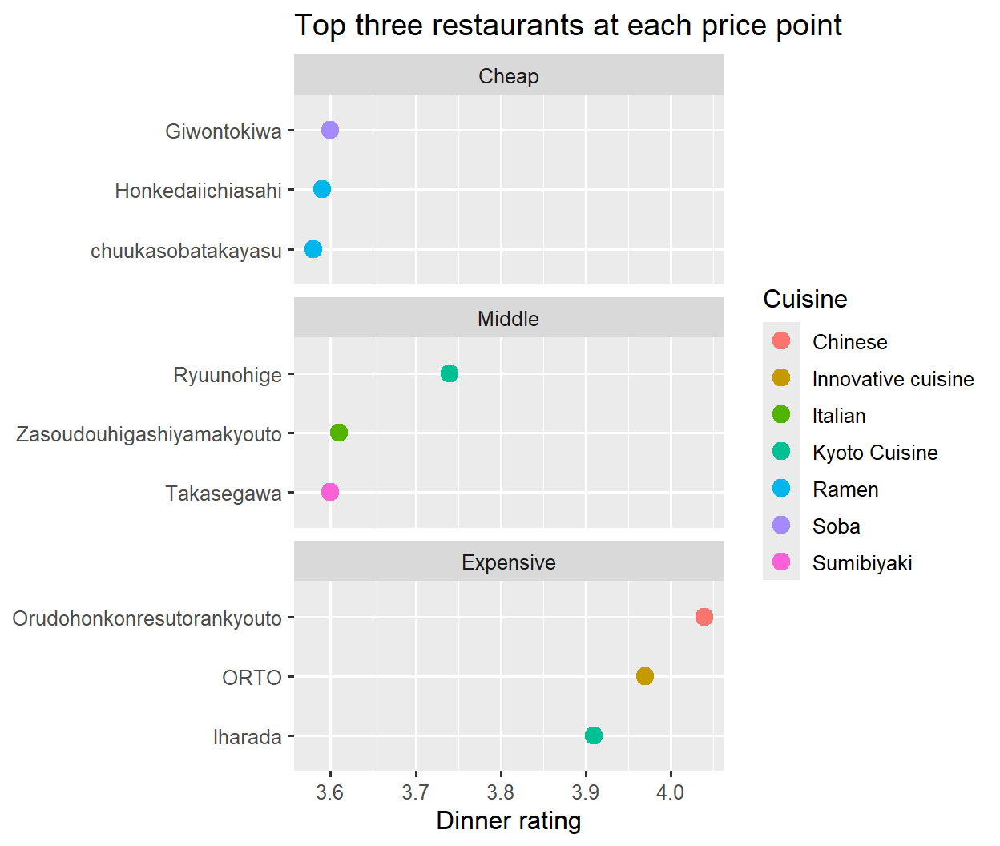

Before trusting this data, ask the usual questions: who collected it, who is in it, and who is missing?
# Ratings: what is the range?range(kyoto_raw$DinnerRating)
[1] 3.00 4.16
# How many reviews does a typical restaurant have?summary(kyoto_raw$ReviewNum)
Min. 1st Qu. Median Mean 3rd Qu. Max.
1.00 7.00 15.00 27.08 30.00 1319.00
Two things to notice:
The lowest rating is exactly 3.0. This suggests the dataset only includes restaurants rated 3.0 or above, so poorly rated restaurants are missing. We can only compare good and very good places.
Many restaurants have very few reviews, so their ratings are not reliable.
Cleaning
The prices are stored as text ranges (for example, 3000 to 3999 yen) with Japanese symbols. We do three things: write each price band in plain text, turn it into a number (the lower end of the band), and assign the price tiers from the question.
We also shorten long restaurant names so tables fit on the page.
# The price text uses two fullwidth Japanese symbols; we build them from their codesyen <-intToUtf8(0xFFE5) # the fullwidth yen signtilde <-intToUtf8(0xFF5E) # the fullwidth tilde that separates the two ends of a bandkyoto <- kyoto_raw |>select(-1, -JapaneseName) |># drop the row-number column and Japanese namesmutate(# plain-text price band: "3000 to 3999", "0 to 999", "30000+"price_text = DinnerPrice |>str_replace_all(yen, "") |># remove the yen signstr_replace_all(tilde, " to ") |># tilde becomes " to "str_squish() |>str_replace("^to ", "0 to ") |>str_replace(" to$", "+"),# lower end of the price band, in yenprice_low =if_else(str_starts(str_trim(DinnerPrice), tilde),0,as.numeric(str_extract(DinnerPrice, "[0-9]+")) ),# the three price points from the questionprice_tier =case_when( price_low <3000~"Cheap", # 0 to 2,999 yen price_low <8000~"Middle", # 3,000 to 7,999 yen price_low <15000~"Expensive", # 8,000 to 14,999 yenTRUE~NA_character_# 15,000 yen and above: not in our tiers ),price_tier =factor(price_tier, levels =c("Cheap", "Middle", "Expensive")),# shortened labels for tables and plotsshort_name =str_trunc(str_squish(Name), 26),short_cuisine =str_trunc(FirstCategory, 20) ) |>select(short_name, Station, FirstCategory, short_cuisine, price_text, price_low, price_tier, DinnerRating, TotalRating, ReviewNum)glimpse(kyoto)
# A tibble: 9 × 6
price_tier short_name short_cuisine price_text DinnerRating ReviewNum
<fct> <chr> <chr> <chr> <dbl> <dbl>
1 Cheap Giwontokiwa Soba 1000 to 1… 3.6 106
2 Cheap Honkedaiichiasahi Ramen 0 to 999 3.59 1319
3 Cheap chuukasobatakayasu Ramen 0 to 999 3.58 713
4 Middle Ryuunohige Kyoto Cuisine 5000 to 5… 3.74 70
5 Middle Zasoudouhigashiyam… Italian 6000 to 7… 3.61 272
6 Middle Takasegawa Sumibiyaki 5000 to 5… 3.6 43
7 Expensive Orudohonkonresutor… Chinese 10000 to … 4.04 148
8 Expensive ORTO Innovative c… 8000 to 9… 3.97 53
9 Expensive Iharada Kyoto Cuisine 10000 to … 3.91 52
ggplot(top_by_tier,aes(x = DinnerRating, y =fct_reorder(short_name, DinnerRating), color = short_cuisine)) +geom_point(size =3.5) +facet_wrap(~ price_tier, ncol =1, scales ="free_y") +labs(x ="Dinner rating", y =NULL, color ="Cuisine",title ="Top three restaurants at each price point")

5. Question 3: which places beat their price?
The top-three lists favour expensive restaurants, because pricier places tend to be rated higher. A more useful question for a diner is: which restaurants are rated higher than we would expect for their price and cuisine?
Step 1: build a simple model of the typical rating
We predict DinnerRating from the price and the cuisine. Cuisines with fewer than 15 restaurants are grouped as “Other” so the model has enough data for each one.
model_data <- rated |>mutate(price_k = price_low /1000, # price in thousands of yencuisine =fct_lump_min(FirstCategory, min =15) # small cuisines become "Other" )rating_fit <-lm(DinnerRating ~ price_k + cuisine, data = model_data)broom::tidy(rating_fit) |>mutate(across(where(is.numeric), \(x) round(x, 3)))
Note: The price_k row is the change in the predicted rating for every extra 1,000 yen on the price band, with cuisine held fixed. The cuisine rows compare each cuisine with the reference cuisine (the first level).
The model explains only part of the variation in ratings:
summary(rating_fit)$r.squared
[1] 0.2040006
This is expected. Price and cuisine alone cannot predict how good a restaurant is, and that leftover is exactly what we want to look at.
Step 2: look at the misses
For each restaurant, the gap is its actual rating minus the rating the model expected. A large positive gap means it is rated much higher than its price and cuisine suggest.